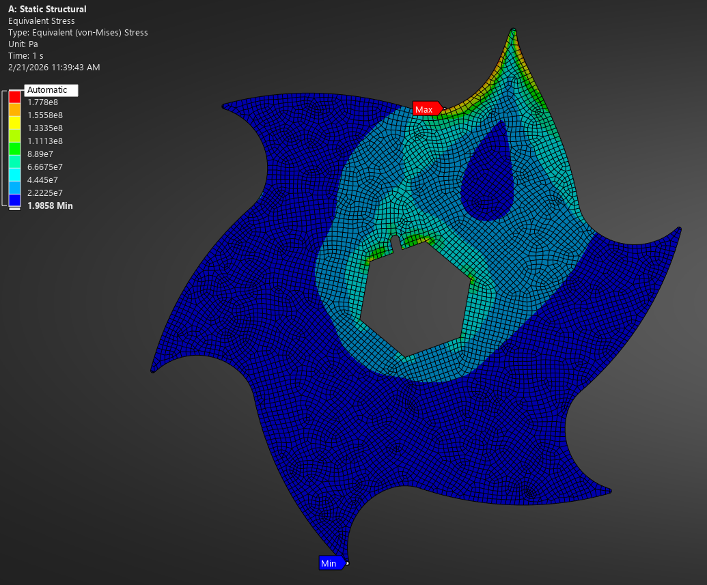
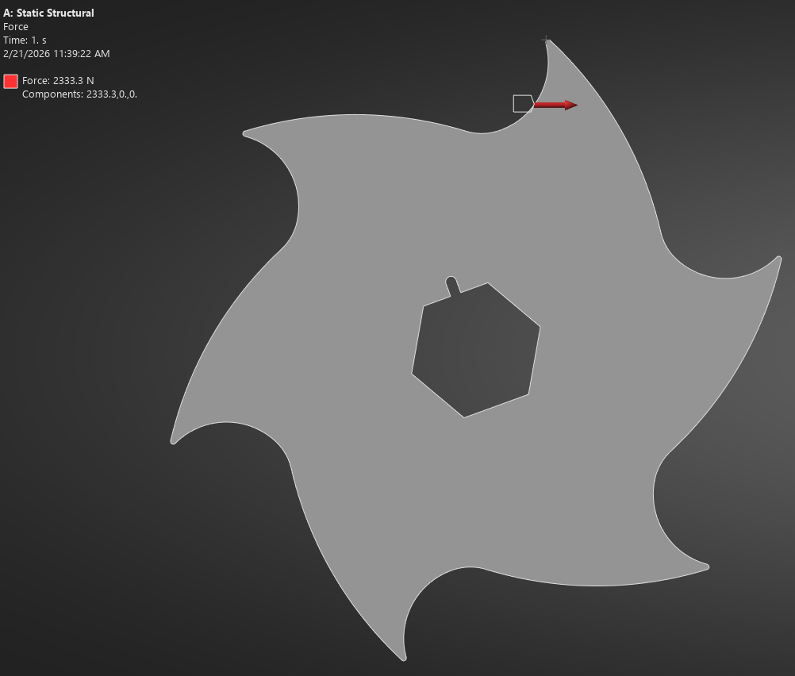

APH Labs; hat içi optik filament çap ölçüm sistemleri, aerodinamik kanallı rüzgar jeneratörleri ve yüksek torklu endüstriyel kırma makineleri tasarlar ve üretir.
Tolerans sınırlarını zorlayan, yüksek çalışma süreli ve verimlilik odaklı endüstriyel makineler.
3D yazıcı filament ekstrüzyon hatları için tasarlanmış, temassız çift eksenli optik mikrometre. Sub-mikron hassasiyetle anlık çap analizi ve kapalı çevrim çekici hız kontrolü.
Altıgenden kareye geçişli difüzör kanal geometrisi ile tasarlanmış, sınır tabaka hızlandırmalı mikro rüzgar türbini. Düşük rüzgarda yüksek tork ve güç katsayısı.
Polimer atıkları, filament fireleri ve teknik kompozitlerin boyut küçültmesi için geliştirilmiş çift şaftlı endüstriyel parçalayıcı. ANSYS statik mukavemet (FEA) onaylı.
Kağıt üzerindeki tasarımdan atölye zeminine kadar her aşamada analitik doğrulama.
STEP, SolidWorks ve Fusion ortamında tolerans yığılım analizli eksiksiz 3D mekanik modelleme.
Şasi ve bıçak mekanik gerilimlerinin ANSYS ile doğrulanması; akışkanlar mekaniği optimizasyonu.
ESP32-P4, ARM mikrodenetleyiciler, optik sensör sürücüleri ve endüstriyel haberleşme protokolleri.

Bıçak Gerilme Dağılımı (von Mises)
Dinamik Kesme Kuvveti Vektörleri| Sistem | Çalışma Aralığı | Hassasiyet / Verim | Hesaplama Çekirdeği | Haberleşme |
|---|---|---|---|---|
| Filament Gauge FM-1 | 1.75 mm / 2.85 mm | ±0.002 mm (±2 µm) | ESP32-P4 + Hızlı DSP | Modbus RTU / TCP / MQTT |
| Ducted Turbine WG-Aero | 0.5 kW – 3.0 kW Ölçeklenebilir | Cp > 0.42 (Difüzör Kanallı) | MPPT Güç Elektroniği | CAN Bus / RS485 Inverter Bağlantısı |
| Industrial Shredder SH-MK | 15 – 35 kg/saat Besleme | Sertleştirilmiş Takım Çeliği Bıçaklar | PLC + Otomatik Geri Dönüş | Endüstriyel Dokunmatik HMI |
Hassas ölçüm sistemleri, rüzgar enerjisi çözümleri veya özel makine talepleriniz için doğrudan bize ulaşın.
Mühendislik ekibimiz teknik şartlarınızı inceleyerek en kısa sürede dönüş yapacaktır.